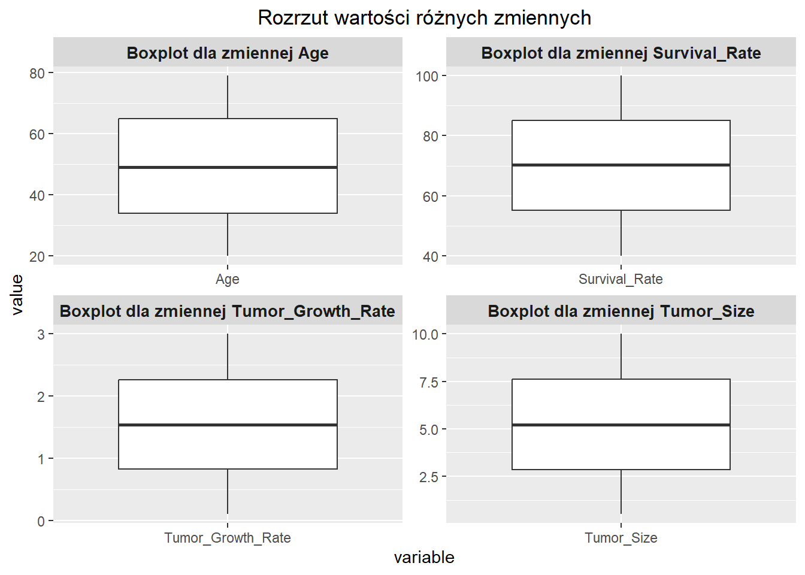

Projekt ma na celu stworzenie modeli klasyfikacyjnych umożliwiających przewidywanie typu guza mózgu (złośliwy/niezłośliwy) oraz ich walidację. Zbiór danych pochodzi ze strony i zawiera 19 zmiennych:
Patient_ID: Unikalny identyfikator każdego pacjenta,
Wiek: Wiek pacjenta (w latach),
Płeć: Płeć pacjenta,
Tumor_Type: Typ guza - zmienna binarna (Malignant/Benign),
Tumor_Size: Rozmiar guza w centymetrach,
Location: Część mózgu, w której znajduje się guz ,
Histology: Typ histologiczny guza,
Stadium: Stadium guza,
Symptom_1: Pierwszy zaobserwowany objaw,
Symptom_2: drugi zaobserwowany objaw,
Symptom_3: trzeci zaobserwowany objaw,
Radiation_Treatment: Czy zastosowano radioterapię,
Surgery_Performed: Czy przeprowadzono operację,
Chemotherapy: Czy zastosowano chemioterapię,
Survival_Rate: Szacowany wskaźnik przeżycia pacjenta (w procentach),
Tumor_Growth_Rate: Tempo wzrostu guza (cm na miesiąc),
Family_History: Czy w rodzinie pacjenta występowały nowotwory mózgu,
MRI_Result: Wynik badania MRI,
Follow_Up_Required: Czy wymagana jest obserwacja.
Dane użyte w projekcie mają charakter symulowany, jednak mimo to przeprowadzenie eksploracyjnej analizy danych (EDA) ma dużą wartość. Taka analiza pozwala lepiej zrozumieć strukturę danych, wykryć potencjalne anomalie, zależności oraz wskazać dalsze kroki w kierunku budowy skutecznych modeli predykcyjnych.
Rozkład wieku oraz rozmiaru guza jest stosunkowo równomierny, bez wyraźnych odchyleń.
Rozkład wskaźnika przeżycia ma charakter prawostronny – wielu pacjentów ma wysokie wskaźniki przeżycia.
Tempo wzrostu guza również ma umiarkowany rozrzut, co może być przydatne w segmentacji przypadków.
Rozrzut wartości
ggplot(Dataset_long, aes(x = variable, y = value)) +geom_boxplot() +facet_wrap(~ variable, scales ="free", ncol =2, labeller =labeller(variable =function(x) paste("Boxplot dla zmiennej", x))) +ggtitle("Rozrzut wartości różnych zmiennych") +theme(strip.text =element_text(size =10, face ="bold"), # Zmiana rozmiaru i stylu tytułów paneliplot.title =element_text(hjust =0.5)) # Wyśrodkowanie tytułu głównego

W analizie wykresów pudełkowych nie zaobserwowano istotnych wartości odstających. Rozkład zmiennych numerycznych, takich jak wiek, rozmiar guza, wskaźnik przeżycia i tempo wzrostu, jest stosunkowo symetryczny lub lekko rozciągnięty, co świadczy o braku skrajnych obserwacji, które mogłyby zaburzyć analizę statystyczną.
Wartości w poszczególnych kategoriach są rozłożone dość równomiernie.
Dla takich zmiennych jak płeć, typ guza, lokalizacja, stadium choroby czy zastosowane terapie nie zaobserwowano istotnej dominacji jednej kategorii.
To świadczy o dobrze zbalansowanym zbiorze danych, co jest korzystne z punktu widzenia modelowania – nie wymaga on specjalnych zabiegów równoważenia klas.
Obecność wielu różnych kategorii (np. objawów, lokalizacji, wyników MRI) sprzyja budowie modeli, które mogą uwzględniać złożone relacje między zmiennymi a typem guza.